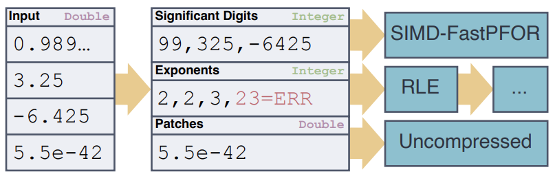

본 글은 논문 BtrBlocks - Efficient Columnar Compression for Data Lakes (SIGMOD '23) 를 읽고 정리한 글입니다.
별도의 명시가 없는 한, 본 글의 모든 그림은 위 논문에서 가져왔습니다.
목차
4. Pseudodecimal Encoding
4.0. Overview
Tip Section 4.0 Overview
- … 는 논문에는 없는 section 이고, 형식상 주인장이 끼워 넣은 것이다.
4.0.1. Floating-point numbers in relational data.
- 기존까지는 floating-point number 에 대한 encoding 방법이 몇개 없었다고 하는데, 이것은 다음과 같은 이유에서였다.
- 기존의 RDBMS 에서는 floating-point 를 별로 사용하지 않고, 정수의 형태인
DECIMAL이나NUMBER을 사용했기 때문.
- 기존의 RDBMS 에서는 floating-point 를 별로 사용하지 않고, 정수의 형태인
- 하지만 이 기조는 Data Lake 으로 넘어오며 많이 바뀌게 된다.
4.0.2. Pseudodecimal Encoding.
- Section 3.2.1 에 나온 compression scheme 들 중 일부는 floating-point number 를 encoding 하는 것이 가능했지만,
- FOR & Bit-packing 이나 FSST 을 적용하는 것은 효율적이지 못했고, 따라서 새로운 Pseudodecimal Encoding 을 고안하게 됐다고 한다.
4.1. Compressing Floating-Point Numbers
4.1.1. Challenges.
- 우선 public BI dataset 을 분석하여 나온 결론은 다음과 같다:
- 많은 경우 float (fixed-precision floating point) 로 충분한 데이터들이 double (double-precision floating point) 로 표현되고 있다는 것이다.
- 가령 금액을 나타내는 경우 (예를 들어 $0.99) 에는 float 로도 충분하다.
- 많은 경우 float (fixed-precision floating point) 로 충분한 데이터들이 double (double-precision floating point) 로 표현되고 있다는 것이다.
- 보기에는 이러한 값들이 compression 이 간단할 것 같지만, 여기에는 두 가지 문제가 있다.
- 우선 IEEE-754 표준 (1bit sign + 11bit exponent + 52bit mantissa) 을 따르는 값들이 FOR + Bit-packing 으로 encoding 되기 어렵다는 것이다.
- 왜냐면 수치상으로는 근접한 두 값이라 할 지라도 bit 로 표현되는 수치는 매우 차이가 크기 때문이다.
- 가령
0.99는00111111011111010111000010100100인 반면,3.25는01000000010100000000000000000000이다.
- 두번째는 binary encoding 의 문제다.
- 어떤 double 값은 이진수로 딱 떨어지지 않고, 따라서 그의 근사치로 저장되는데 이때의 Mantissa 값이 아주 흉악스럽기 때문이다.
- 동일한 값이 여러개 있거나 아니면 범위 내의 비슷한 애들이 많아야 encoding scheme 을 적용하기가 용이한데, 저런 흉악범이 포함돼 있으면 적용하기가 쉽지 않은 것.
- 우선 IEEE-754 표준 (1bit sign + 11bit exponent + 52bit mantissa) 을 따르는 값들이 FOR + Bit-packing 으로 encoding 되기 어렵다는 것이다.
- 두번째 문제를 좀 더 자세히 살펴보자. 가령,
0.99는 IEEE-754 로 변환하면 다음처럼 바뀐다.
0011111111101111101011100001010001111010111000010100011110101110
- 이것을 다시 double 로 바꿔보자. 각각의 field 들로 쪼개면 이렇게 된다.
SIGN: 0
EXPN: 01111111110
MANT: 1111101011100001010001111010111000010100011110101110
- 그리고 여기에서 실질적인 값을 꺼내보면 다음과 같다.
- Exponent - Bias = = =
- Mantissa = =
- 즉, = 라는 요사스러운 값이 나오게 된다.
- 대신 저런 조악스러운 것이 저장되기 때문에, encoding 이 쉽지 않은 것.
4.1.2. Floating-point numbers as integer tuples.
- Pseudodecimal 이라는 말에서 알 수 있듯이, 이 encoding 은 double 을 두개의 decimal (Significant with sign 와 Exponent) 로 쪼개게 된다.
- Significant with sign 은 Mantissa 와 비슷한 역할이다: “정수로 표현되는 가수” 정도로 말할 수 있다.
- 즉,
3.25는[325, 2]로 표현된다.
- 그럼 이때 precision 문제는 어떻게 해결할까?
0.99의 실제 bitwise, 가령0.9899...을 가지고[9898..., 17]로 저장할 수도 있지만- 그냥
[99, 2]로 저장해도 충분하다.- 왜냐면 어차피 decompression 시에 이것은 다시
0.99가 되어 bitwise 로는0.9899...가 될것이기 때문.
- 왜냐면 어차피 decompression 시에 이것은 다시
- 이를 위해, compressing 과정에서는 다음의 두 작업을 한다고 할 수 있다. (다음 Section 에서 볼 수 있듯이, 이 두개를 순서대로 하는 것은 아니다.)
- IEEE-754 floating point 를 두 decimal 로 나누기
- Compact decimal representation 생성하기
Tip Compact decimal representation 란?
- 여기서 Compact decimal representation 는 위에서 말한 “binary representation 에 의한 오차를 decimal representation 으로 없애기” 정도로 이해하면 된다.
4.1.2. Encoding Algorithm.

- 그래서, Pseudodecimal Encoding 의 전체적인 pseudo-code 는 위와 같다.
- 일단 큰 흐름은 다음과 같다.
digit변수:input값에다 를 곱한 뒤, 소수점을 날린다.- 여기서 를 곱하고 나누고 하는 것은 전부 pre-calculated array
frac10[]를 이용한다. 그냥 매번 계산하는 것을 막고자 요래 했다고 하네.
- 여기서 를 곱하고 나누고 하는 것은 전부 pre-calculated array
orig변수:digit변수를 다시 으로 나눈다.input변수와orig변수를 비교한다.- 이때, 만약 두 변수의 값이 다르다면 (1) 과정에서 날라간 소수점이 있다는 소리이다. 즉, 아직 Mantissa 가 완벽히 정수 Significant 로 변환되지 않았다는 소리이기 때문에, 을 증가시켜서 다시 (1) 로 돌아간다.
- 말로만 설명하니까 좀 그런데, 예를 들어
3.25에서exp = 1이면orig = 3.2일 것이므로 일치하지 않는다. 이것은0.05가 날라갔기 때문이고, 예상하는 결과는[32, 1]이 아니라[325, 2]이기 때문에exp을 1 증가시켜 다시 시도하는 것.
- 말로만 설명하니까 좀 그런데, 예를 들어
- 만약 두 변수의 값이 같다면,
input이 완벽하게digit * 10^exp로 표현된 것이기에[digit, exp]를 반환한다. - 만약 두 변수가 가 될 때까지 같아지지 않는다면, 혹은 로 판단해 exception 으로 처리한다.
- 이때, 만약 두 변수의 값이 다르다면 (1) 과정에서 날라간 소수점이 있다는 소리이다. 즉, 아직 Mantissa 가 완벽히 정수 Significant 로 변환되지 않았다는 소리이기 때문에, 을 증가시켜서 다시 (1) 로 돌아간다.
- 여기서 decimal tuple 로 변환되지 않는 것은 Exception 으로 처리한다.
- 혹은 는 당연히 decimal tuple 로 변환되지 않을 것이므로 이놈들이 Exception 가 되고
- Sign 이
digit에 들어가기 때문에 1 에 대해서도 Exception 으로 처리한다고 한다.
- Exception 처리는 그냥 단순하다. 로 해놓고, 그냥 input double 그대로 세번째 field 에 처박아놓으면 된다.
- 따라서 결과적으로 Pseudodecimal Encoding 을 거치게 되면 decimal column 두개, double column (Patch column) 하나가 나오게 된다.
- 이때 Significant column 의 경우에는 32bit,
- Exponent column 의 경우에는 5bit 을 사용한다고 한다.
4.2. Pseudodecimal Encoding in BtrBlocks
4.2.1. Cascading to integer encoding schemes.
- 위에서 말한 것처럼, 결과적으로 Significant, Exponent decimal column 두개와 하나의 Patch double column 이 나오게 된다.
- 그리고 이것들이 cascading 되어 새로 encoding 되게 되는 것.
- 가령, 다음의 예시 (여기서 선택된 cascading encoding scheme 또한 당연히 예시이다) 처럼 된다는 것.

위 그림에 대한 첨언
- 여기서 Input 은 세로방향이고, 그 옆의 Significant, Exponent, Patch 는 가로방향이다.
- 즉,
0.989가 Significant 의 첫 원소 (99), Exponent 의 첫 원소 (2) 로 변환되는 것.
4.2.2. When to choose Pseudodecimal Encoding.
- Section 3.1.2 에서 heuristic 으로 compression scheme 을 걸러낸다고 했는데, 그럼 Pseudodecimal Encoding 의 경우에는 언제 걸러질까?
- 첫번째는 Exception 이 너무나 많을 때이다.
- 이 경우에 Pseudodecimal Encoding 을 사용하면 compression ratio 는 살짝 증가하긴 하지만, Exception 처리가 너무 빈번해져 decompression overhead 가 너무 커지게 된다.
- 따라서 Exception 이 50% 이 넘어가게 되면, 이놈이 제외된다.
- 두번째는 unique value 가 너무 적을 때이다. 이때에는 Dictionary 를 사용하는 것이 훨씬 더 decompression overhead 가 적기 때문에, unique value 가 10% 이하로 떨어지면 이놈이 제외된다.
- 첫번째는 Exception 이 너무나 많을 때이다.